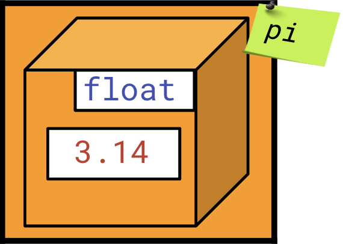

<!DOCTYPE html>
<html lang="en">
  <head>
    <meta charset="utf-8" />
    <meta name="viewport" content="width=device-width, initial-scale=1.0, maximum-scale=1.0, user-scalable=no" />

    <title></title>
    <link rel="stylesheet" href="dist/reveal.css" />
    <link rel="stylesheet" href="dist/theme/iph.css" id="theme" />
    <link rel="stylesheet" href="plugin/highlight/spyder.css" />
	<link rel="stylesheet" href="css/layout.css" />
	<link rel="stylesheet" href="plugin/customcontrols/style.css">


    <script defer src="dist/fontawesome/all.min.js"></script>

	<script type="text/javascript">
		var forgetPop = true;
		function onPopState(event) {
			if(forgetPop){
				forgetPop = false;
			} else {
				parent.postMessage(event.target.location.href, "app://obsidian.md");
			}
        }
		window.onpopstate = onPopState;
		window.onmessage = event => {
			if(event.data == "reload"){
				window.document.location.reload();
			}
			forgetPop = true;
		}

		function fitElements(){
			const itemsToFit = document.getElementsByClassName('fitText');
			for (const item in itemsToFit) {
				if (Object.hasOwnProperty.call(itemsToFit, item)) {
					var element = itemsToFit[item];
					fitElement(element,1, 1000);
					element.classList.remove('fitText');
				}
			}
		}

		function fitElement(element, start, end){

			let size = (end + start) / 2;
			element.style.fontSize = `${size}px`;

			if(Math.abs(start - end) < 1){
				while(element.scrollHeight > element.offsetHeight){
					size--;
					element.style.fontSize = `${size}px`;
				}
				return;
			}

			if(element.scrollHeight > element.offsetHeight){
				fitElement(element, start, size);
			} else {
				fitElement(element, size, end);
			}		
		}


		document.onreadystatechange = () => {
			fitElements();
			if (document.readyState === 'complete') {
				if (window.location.href.indexOf("?export") != -1){
					parent.postMessage(event.target.location.href, "app://obsidian.md");
				}
				if (window.location.href.indexOf("print-pdf") != -1){
					let stateCheck = setInterval(() => {
						clearInterval(stateCheck);
						window.print();
					}, 250);
				}
			}
	};


        </script>
  </head>
  <body>
    <div class="reveal">
      <div class="slides"><section  data-markdown><script type="text/template"><!-- .slide: class="has-light-background drop" data-background-color="#f8f8f8" -->
<div class="" style="position: absolute; left: 0px; top: 0px; height: 700px; width: 960px; min-height: 700px; display: flex; flex-direction: column; align-items: center; justify-content: center" absolute="true">

### <i class="fas fa-award"></i> IP Honores

 ####  *Variables y la instrucción de asignación*

[Eduardo Rosales](mailto:ee.rosales24@uniandes.edu.co)

Departamento de Ingeniería de Sistemas y Computación

Universidad de los Andes
</div></script></section><section  data-markdown><script type="text/template"><!-- .slide: class="has-light-background drop" data-background-color="#f8f8f8" -->
<div class="" style="position: absolute; left: 0px; top: 0px; height: 700px; width: 960px; min-height: 700px; display: flex; flex-direction: column; align-items: center; justify-content: center" absolute="true">

### 🌀 Recordatorio de Variables y Objetos 🌀
</div></script></section><section  data-markdown><script type="text/template"><!-- .slide: class="has-light-background drop" data-background-color="#f8f8f8" -->
<div class="" style="position: absolute; left: 0px; top: 0px; height: 700px; width: 960px; min-height: 700px; display: flex; flex-direction: column; align-items: center; justify-content: center" absolute="true">

### Variables y Objetos (1/2)
 
- **Variable**
	- **Nombre** simbólico  🏷️
	- Que **referencia** a una ubicación en memoria
		- En donde reside un _objeto_


	<br>

- Para este ejemplo:
```Python
pi = 3.14
```

<br> 

- Esta sería la representación conceptual:


</div></script></section><section  data-markdown><script type="text/template"><!-- .slide: class="has-light-background drop" data-background-color="#f8f8f8" -->
<div class="" style="position: absolute; left: 0px; top: 0px; height: 700px; width: 960px; min-height: 700px; display: flex; flex-direction: column; align-items: center; justify-content: center" absolute="true">

### Variables y Objetos (2/3)

- Tal y como se ve en la imagen
	- Una variable es solo un **nombre**
		- Que **referencia** a una ubicación de memoria
	
<br>


</div></script></section><section  data-markdown><script type="text/template"><!-- .slide: class="has-light-background drop" data-background-color="#f8f8f8" -->
<div class="" style="position: absolute; left: 0px; top: 0px; height: 700px; width: 960px; min-height: 700px; display: flex; flex-direction: column; align-items: center; justify-content: center" absolute="true">

### Variables y Objetos (3/3)

- Una variable
	- **No** es el objeto
	- **No** contiene al objeto

<br>


</div></script></section><section  data-markdown><script type="text/template"><!-- .slide: class="has-light-background drop" data-background-color="#f8f8f8" -->
<div class="" style="position: absolute; left: 0px; top: 0px; height: 700px; width: 960px; min-height: 700px; display: flex; flex-direction: column; align-items: center; justify-content: center" absolute="true">

### 🌀 Recordatorio de Heap y Stack 🌀
</div></script></section><section  data-markdown><script type="text/template"><!-- .slide: class="has-light-background drop" data-background-color="#f8f8f8" -->
<div class="" style="position: absolute; left: 0px; top: 0px; height: 700px; width: 960px; min-height: 700px; display: flex; flex-direction: column; align-items: center; justify-content: center" absolute="true">

### Heap (1/4)

- Región de memoria 
	- Donde Python **almacena** objetos
</div></script></section><section  data-markdown><script type="text/template"><!-- .slide: class="has-light-background drop" data-background-color="#f8f8f8" -->
<div class="" style="position: absolute; left: 0px; top: 0px; height: 700px; width: 960px; min-height: 700px; display: flex; flex-direction: column; align-items: center; justify-content: center" absolute="true">

### Heap (2/4)
	
- Es como una "piscina"
	- En donde Python guarda objetos
</div></script></section><section  data-markdown><script type="text/template"><!-- .slide: class="has-light-background drop" data-background-color="#f8f8f8" -->
<div class="" style="position: absolute; left: 0px; top: 0px; height: 700px; width: 960px; min-height: 700px; display: flex; flex-direction: column; align-items: center; justify-content: center" absolute="true">

### Heap (3/4)

- Representación simplificada
	- Ya que heap es una región dinámica:
	- Cada celda representaría
		- Una ubicación **única** de memoria
		

<br>


</div></script></section><section  data-markdown><script type="text/template"><!-- .slide: class="has-light-background drop" data-background-color="#f8f8f8" -->
<div class="" style="position: absolute; left: 0px; top: 0px; height: 700px; width: 960px; min-height: 700px; display: flex; flex-direction: column; align-items: center; justify-content: center" absolute="true">

### Heap (4/4)

- En el heap cada objeto:

	<br>

	- Se almacena en un **ubicación de memoria**
		- Asignada según su tamaño

	<br>

	- Esa ubicación de memoria
		- Tiene una **dirección única**
		
		<br>

	- Esta dirección de memoria única
		- Es la  **identidad del objeto**
			- Que allí resida (si alguno)
</div></script></section><section  data-markdown><script type="text/template"><!-- .slide: class="has-light-background drop" data-background-color="#f8f8f8" -->
<div class="" style="position: absolute; left: 0px; top: 0px; height: 700px; width: 960px; min-height: 700px; display: flex; flex-direction: column; align-items: center; justify-content: center" absolute="true">

### ¿En dónde se almacenan las variables?
</div></script></section><section  data-markdown><script type="text/template"><!-- .slide: class="has-light-background drop" data-background-color="#f8f8f8" -->
<div class="" style="position: absolute; left: 0px; top: 0px; height: 700px; width: 960px; min-height: 700px; display: flex; flex-direction: column; align-items: center; justify-content: center" absolute="true">

### Stack (1/2)

- En Python
	- Las variables se **almacenan** en el Stack
	
	- Desde el Stack se _referencia_ o _apunta_ 
		- A objetos en el Heap
</div></script></section><section  data-markdown><script type="text/template"><!-- .slide: class="has-light-background drop" data-background-color="#f8f8f8" -->
<div class="" style="position: absolute; left: 0px; top: 0px; height: 700px; width: 960px; min-height: 700px; display: flex; flex-direction: column; align-items: center; justify-content: center" absolute="true">

### Stack (2/2)

- Para este ejemplo:
```python
pi = 3.14
```


</div></script></section><section  data-markdown><script type="text/template"><!-- .slide: class="has-light-background drop" data-background-color="#f8f8f8" -->
<div class="" style="position: absolute; left: 0px; top: 0px; height: 700px; width: 960px; min-height: 700px; display: flex; flex-direction: column; align-items: center; justify-content: center" absolute="true">

### Quiz I

- Para este ejemplo:

```Python
uno = 1
pi = 3.14
resultado = uno + pi
```

<br>

- ¿Cómo se verían el diagrama Heap y Stack?
</div></script></section><section  data-markdown><script type="text/template"><!-- .slide: class="has-light-background drop" data-background-color="#f8f8f8" -->
<div class="" style="position: absolute; left: 0px; top: 0px; height: 700px; width: 960px; min-height: 700px; display: flex; flex-direction: column; align-items: center; justify-content: center" absolute="true">

### Quiz I - Solución

- Para este ejemplo:

```Python
uno = 1
pi = 3.14
resultado = uno + pi
```

<br>

- ¿Cómo se verían el diagrama Heap y Stack?


</div></script></section><section  data-markdown><script type="text/template"><!-- .slide: class="has-light-background drop" data-background-color="#f8f8f8" -->
<div class="" style="position: absolute; left: 0px; top: 0px; height: 700px; width: 960px; min-height: 700px; display: flex; flex-direction: column; align-items: center; justify-content: center" absolute="true">

### ¿Cómo se hizo que una variable referencie/apunte a la ubicación de un objeto?
</div></script></section><section  data-markdown><script type="text/template"><!-- .slide: class="has-light-background drop" data-background-color="#f8f8f8" -->
<div class="" style="position: absolute; left: 0px; top: 0px; height: 700px; width: 960px; min-height: 700px; display: flex; flex-direction: column; align-items: center; justify-content: center" absolute="true">

### Instrucción de asignación (1/4)

- Asocia/asigna una nombre a una ubicación en memoria

- Sintaxis: 
```Python
identificador = expresion
```
    

- `identificador`: Un identificador válido en Python

- `expresion`: Una expresión que produce un valor


- Ej:
```Python
promedio = 1.5
```
</div></script></section><section  data-markdown><script type="text/template"><!-- .slide: class="has-light-background drop" data-background-color="#f8f8f8" -->
<div class="" style="position: absolute; left: 0px; top: 0px; height: 700px; width: 960px; min-height: 700px; display: flex; flex-direction: column; align-items: center; justify-content: center" absolute="true">

### Instrucción de asignación (2/4)

```Python
promedio = 1.5
```

<br>


</div></script></section><section  data-markdown><script type="text/template"><!-- .slide: class="has-light-background drop" data-background-color="#f8f8f8" -->
<div class="" style="position: absolute; left: 0px; top: 0px; height: 700px; width: 960px; min-height: 700px; display: flex; flex-direction: column; align-items: center; justify-content: center" absolute="true">

### Instrucción de asignación (3/4)

```Python
promedio = 1.5
```

<br>

- Por simplicidad 
	- Se dice que 
		- A la variable '`promedio`' 
			- _"Es igual a"_ `1.5`
</div></script></section><section  data-markdown><script type="text/template"><!-- .slide: class="has-light-background drop" data-background-color="#f8f8f8" -->
<div class="" style="position: absolute; left: 0px; top: 0px; height: 700px; width: 960px; min-height: 700px; display: flex; flex-direction: column; align-items: center; justify-content: center" absolute="true">

### Instrucción de asignación (4/4)

```Python
promedio = 1.5
```

<br>

- Una asignación es "muda"
	- Es decir
		- No producen ninguna salida en pantalla
</div></script></section><section  data-markdown><script type="text/template"><!-- .slide: class="has-light-background drop" data-background-color="#f8f8f8" -->
<div class="" style="position: absolute; left: 0px; top: 0px; height: 700px; width: 960px; min-height: 700px; display: flex; flex-direction: column; align-items: center; justify-content: center" absolute="true">

### Identificador

- _Nombre textual_ que se da a:
	- Una variable
	- Y otros elementos en Python
		- Ej: Funciones
</div></script></section><section  data-markdown><script type="text/template"><!-- .slide: class="has-light-background drop" data-background-color="#f8f8f8" -->
<div class="" style="position: absolute; left: 0px; top: 0px; height: 700px; width: 960px; min-height: 700px; display: flex; flex-direction: column; align-items: center; justify-content: center" absolute="true">

### Reglas para identificadores en Python

- Existen reglas que le aplican a los identificadores:
	- <a href="https://eerosales24.github.io/iph_2025_20/general/buenas_practicas/#/8" target="_blank" rel="noopener noreferrer">BP1 - Reglas para identificadores en Python</a>
</div></script></section><section  data-markdown><script type="text/template"><!-- .slide: class="has-light-background drop" data-background-color="#f8f8f8" -->
<div class="" style="position: absolute; left: 0px; top: 0px; height: 700px; width: 960px; min-height: 700px; display: flex; flex-direction: column; align-items: center; justify-content: center" absolute="true">

### Palabra clave

- Palabra reservada que tiene 
	- Un significado especial en Python:

<table border="1" style="border-collapse: collapse; width: 100%; text-align: center; font-size: 20px;">
  <tr>
    <td><code>False</code></td>
    <td><code>await</code></td>
    <td><code>else</code></td>
    <td><code>import</code></td>
    <td><code>pass</code></td>
  </tr>
  <tr>
    <td><code>None</code></td>
    <td><code>break</code></td>
    <td><code>except</code></td>
    <td><code>in</code></td>
    <td><code>raise</code></td>
  </tr>
  <tr>
    <td><code>True</code></td>
    <td><code>class</code></td>
    <td><code>finally</code></td>
    <td><code>is</code></td>
    <td><code>return</code></td>
  </tr>
  <tr>
    <td><code>and</code></td>
    <td><code>continue</code></td>
    <td><code>for</code></td>
    <td><code>lambda</code></td>
    <td><code>try</code></td>
  </tr>
  <tr>
    <td><code>as</code></td>
    <td><code>def</code></td>
    <td><code>from</code></td>
    <td><code>nonlocal</code></td>
    <td><code>while</code></td>
  </tr>
  <tr>
    <td><code>assert</code></td>
    <td><code>del</code></td>
    <td><code>global</code></td>
    <td><code>not</code></td>
    <td><code>with</code></td>
  </tr>
  <tr>
    <td><code>async</code></td>
    <td><code>elif</code></td>
    <td><code>if</code></td>
    <td><code>or</code></td>
    <td><code>yield</code></td>
  </tr>
</table>

- En el curso, estudiaremos varias palabras clave...
</div></script></section><section  data-markdown><script type="text/template"><!-- .slide: class="has-light-background drop" data-background-color="#f8f8f8" -->
<div class="" style="position: absolute; left: 0px; top: 0px; height: 700px; width: 960px; min-height: 700px; display: flex; flex-direction: column; align-items: center; justify-content: center" absolute="true">

### Ejemplos de identificadores válidos

```Plaintext
PI
promedio
velocidad_maxima
```
</div></script></section><section  data-markdown><script type="text/template"><!-- .slide: class="has-light-background drop" data-background-color="#f8f8f8" -->
<div class="" style="position: absolute; left: 0px; top: 0px; height: 700px; width: 960px; min-height: 700px; display: flex; flex-direction: column; align-items: center; justify-content: center" absolute="true">

### Ejemplos de identificadores inválidos

- 3variable (empieza con **dígito**)
- -mi_variable (empieza con **guión**)
- mi variable (contiene un **espacio**)
- True (usa una **palabra clave**)
- mi$variable (contiene un **carácter especial**)
</div></script></section><section  data-markdown><script type="text/template"><!-- .slide: class="has-light-background drop" data-background-color="#f8f8f8" -->
<div class="" style="position: absolute; left: 0px; top: 0px; height: 700px; width: 960px; min-height: 700px; display: flex; flex-direction: column; align-items: center; justify-content: center" absolute="true">

### Quiz II


- ¿Cuáles de los siguientes son identificadores **inválidos**?
	 - first_name
	 - my-var
	 - 2times
	 - from
</div></script></section><section  data-markdown><script type="text/template"><!-- .slide: class="has-light-background drop" data-background-color="#f8f8f8" -->
<div class="" style="position: absolute; left: 0px; top: 0px; height: 700px; width: 960px; min-height: 700px; display: flex; flex-direction: column; align-items: center; justify-content: center" absolute="true">

### Quiz II - Solución

- `my-var`
	- No puede contener guión `-`
		- Solo puede contener guiones bajos `_`
- `2times`
	- No puede comenzar con un número
- `from` 
	- No puede ser una palabra clave
</div></script></section><section  data-markdown><script type="text/template"><!-- .slide: class="has-light-background drop" data-background-color="#f8f8f8" -->
<div class="" style="position: absolute; left: 0px; top: 0px; height: 700px; width: 960px; min-height: 700px; display: flex; flex-direction: column; align-items: center; justify-content: center" absolute="true">

### Variables: Declarar y luego usar (1/3)

<br>

- ¿Cuál es el resultado de ejecutar la siguiente instrucción?

	<br>

	```Python
	promedio = promedio +  1
	```
</div></script></section><section  data-markdown><script type="text/template"><!-- .slide: class="has-light-background drop" data-background-color="#f8f8f8" -->
<div class="" style="position: absolute; left: 0px; top: 0px; height: 700px; width: 960px; min-height: 700px; display: flex; flex-direction: column; align-items: center; justify-content: center" absolute="true">

### Variables: Declarar y luego usar (2/3)

- ¿Cuál es el resultado de ejecutar la siguiente expresión?


	```Python
	promedio = promedio +  1
	```

<br>

- **Respuesta:**

```Plaintext
Traceback (most recent call last):

    Cell In[...], line …

        promedio =  promedio + 1  
NameError: name 'promedio' is not defined
```

<br>
</div></script></section><section  data-markdown><script type="text/template"><!-- .slide: class="has-light-background drop" data-background-color="#f8f8f8" -->
<div class="" style="position: absolute; left: 0px; top: 0px; height: 700px; width: 960px; min-height: 700px; display: flex; flex-direction: column; align-items: center; justify-content: center" absolute="true">

### Errores en Python


- <a href="https://eerosales24.github.io/iph_2025_20/general/errores_comunes/#/7" target="_blank" rel="noopener noreferrer">NameError</a>
</div></script></section><section  data-markdown><script type="text/template"><!-- .slide: class="has-light-background drop" data-background-color="#f8f8f8" -->
<div class="" style="position: absolute; left: 0px; top: 0px; height: 700px; width: 960px; min-height: 700px; display: flex; flex-direction: column; align-items: center; justify-content: center" absolute="true">

### Constantes

- Variables que, por convención, 
	- No deben modificarse durante la ejecución del programa
- Usadas para valores fijos, como tasas, configuraciones, etc.
- Declaración:
	- No hay un tipo 'constante' en Python
	- Se usan variables normales para definirlas

- Convención:
	- Los nombres de constantes se escriben en **mayúsculas**
</div></script></section><section  data-markdown><script type="text/template"><!-- .slide: class="has-light-background drop" data-background-color="#f8f8f8" -->
<div class="" style="position: absolute; left: 0px; top: 0px; height: 700px; width: 960px; min-height: 700px; display: flex; flex-direction: column; align-items: center; justify-content: center" absolute="true">

### Constantes - Ejemplos

```Python
PI = 3.14159
TASA_FIJA = 0.08
ALTURA_MAXIMA = 21.1
IVA = 0.19
```
</div></script></section><section  data-markdown><script type="text/template"><!-- .slide: class="has-light-background drop" data-background-color="#f8f8f8" -->
<div class="" style="position: absolute; left: 0px; top: 0px; height: 700px; width: 960px; min-height: 700px; display: flex; flex-direction: column; align-items: center; justify-content: center" absolute="true">

### Hay asignaciones que incluyen una operación
</div></script></section><section  data-markdown><script type="text/template"><!-- .slide: class="has-light-background drop" data-background-color="#f8f8f8" -->
<div class="" style="position: absolute; left: 0px; top: 0px; height: 700px; width: 960px; min-height: 700px; display: flex; flex-direction: column; align-items: center; justify-content: center" absolute="true">

### Asignaciones con operador

-   Combinación de operador y  asignación:
	-     +=, -=, *=, /=, %=, //=, **=
-   Ej:

```Python
# Asuma ejecución secuencial de cada línea
x = 1
x += 1  # → 2 (Equivalente a: x = x + 1)
x -= 1  # → 1 (Equivalente a: x = x - 1)
x *= 1  # → 1 (Equivalente a: x = x * 1)
x /= 1  # → 1.0 (Equivalente a: x = x / 1)
x //= 1  # → 1.0 (Equivalente a: x = x // 1)
x **= 1  # → 1.0 (Equivalente a: x = x ** 1)
```
</div></script></section><section  data-markdown><script type="text/template"><!-- .slide: class="has-light-background drop" data-background-color="#f8f8f8" -->
<div class="" style="position: absolute; left: 0px; top: 0px; height: 700px; width: 960px; min-height: 700px; display: flex; flex-direction: column; align-items: center; justify-content: center" absolute="true">

### Asignaciones con operador - Resumen

<table border="1" style="border-collapse: collapse; width: 90%; text-align: center; font-size: 20px; padding: 8px;">
  <thead style="background-color: #d0e6f8;">
    <tr>
      <th style="color: black; padding: 4px;">Operador</th>
      <th style="color: black; padding: 4px;">Descripción</th>
      <th style="color: black; padding: 4px;">Ejemplo</th>
      <th style="color: black; padding: 4px;">Equivalente</th>
    </tr>
  </thead>
  <tbody>
    <tr>
      <td style="padding: 4px;"><code>+=</code></td>
      <td style="padding: 4px;">Suma y asignación</td>
      <td style="padding: 4px;"><code>x += 5</code></td>
      <td style="padding: 4px;"><code>x = x + 5</code></td>
    </tr>
    <tr>
      <td style="padding: 4px;"><code>-=</code></td>
      <td style="padding: 4px;">Resta y asignación</td>
      <td style="padding: 4px;"><code>x -= 5</code></td>
      <td style="padding: 4px;"><code>x = x - 5</code></td>
    </tr>
    <tr>
      <td style="padding: 4px;"><code>*=</code></td>
      <td style="padding: 4px;">Multiplicación y asignación</td>
      <td style="padding: 4px;"><code>x *= 5</code></td>
      <td style="padding: 4px;"><code>x = x * 5</code></td>
    </tr>
    <tr>
      <td style="padding: 4px;"><code>/=</code></td>
      <td style="padding: 4px;">División y asignación</td>
      <td style="padding: 4px;"><code>x /= 5</code></td>
      <td style="padding: 4px;"><code>x = x / 5</code></td>
    </tr>
    <tr>
      <td style="padding: 4px;"><code>//=</code></td>
      <td style="padding: 4px;">División entera y asignación</td>
      <td style="padding: 4px;"><code>x //= 5</code></td>
      <td style="padding: 4px;"><code>x = x // 5</code></td>
    </tr>
    <tr>
      <td style="padding: 4px;"><code>%=</code></td>
      <td style="padding: 4px;">Módulo y asignación</td>
      <td style="padding: 4px;"><code>x %= 5</code></td>
      <td style="padding: 4px;"><code>x = x % 5</code></td>
    </tr>
    <tr>
      <td style="padding: 4px;"><code>**=</code></td>
      <td style="padding: 4px;">Exponenciación y asignación</td>
      <td style="padding: 4px;"><code>x **= 5</code></td>
      <td style="padding: 4px;"><code>x = x ** 5</code></td>
    </tr>
  </tbody>
</table>
</div></script></section><section  data-markdown><script type="text/template"><!-- .slide: class="has-light-background drop" data-background-color="#f8f8f8" -->
<div class="" style="position: absolute; left: 0px; top: 0px; height: 700px; width: 960px; min-height: 700px; display: flex; flex-direction: column; align-items: center; justify-content: center" absolute="true">

###  Quiz III

- ¿Cuál es el valor retornado por cada expresión y el valor asignado a `resultado`  (**asumiendo ejecución secuencial de cada línea**)?

```Python
y = 2
y += 2
y *= 2
y -= 3
y //= 2
resultado = y + 2
```
</div></script></section><section  data-markdown><script type="text/template"><!-- .slide: class="has-light-background drop" data-background-color="#f8f8f8" -->
<div class="" style="position: absolute; left: 0px; top: 0px; height: 700px; width: 960px; min-height: 700px; display: flex; flex-direction: column; align-items: center; justify-content: center" absolute="true">

### Quiz III - Solución

```Python
y = 2  # y = 2
y += 2  # → 4 (Equivalente a: y = y + 2)
y *= 2  # → 8 (Equivalente a: y = y * 2)
y -= 3  # → 5 (Equivalente a: y = y - 3)
y //= 2  # → 2 (Equivalente a: y = y // 2)
resultado = y + 2  # resultado = 4
```
</div></script></section><section  data-markdown><script type="text/template"><!-- .slide: class="has-light-background drop" data-background-color="#f8f8f8" -->
<div class="" style="position: absolute; left: 0px; top: 0px; height: 700px; width: 960px; min-height: 700px; display: flex; flex-direction: column; align-items: center; justify-content: center" absolute="true">

### Para cerrar

- Las siguientes buenas prácticas le aplican a las variables:

	 - <a href="https://eerosales24.github.io/iph_2025_20/general/buenas_practicas/#/8" target="_blank" rel="noopener noreferrer">BP-1 Reglas para identificadores en Python</a>
	- <a href="https://eerosales24.github.io/iph_2025_20/general/buenas_practicas/#/11" target="_blank" rel="noopener noreferrer">BP-2 Nombres autoexplicativos</a>
	- <a href="https://eerosales24.github.io/iph_2025_20/general/buenas_practicas/#/12" target="_blank" rel="noopener noreferrer">BP-3 Nombres concisos</a>
	- <a href="https://eerosales24.github.io/iph_2025_20/general/buenas_practicas/#/13" target="_blank" rel="noopener noreferrer">BP-4 snake_case</a>
	- <a href="https://eerosales24.github.io/iph_2025_20/general/buenas_practicas/#/14" target="_blank" rel="noopener noreferrer">BP-5 Uso de constantes</a>
	- <a href="https://eerosales24.github.io/iph_2025_20/general/buenas_practicas/#/15" target="_blank" rel="noopener noreferrer">BP-6 Nombramiento de constantes</a>
</div></script></section><section  data-markdown><script type="text/template"><!-- .slide: class="has-light-background drop" data-background-color="#f8f8f8" -->
<div class="" style="position: absolute; left: 0px; top: 0px; height: 700px; width: 960px; min-height: 700px; display: flex; flex-direction: column; align-items: center; justify-content: center" absolute="true">

<i class="fas fa-question-circle fa-2x fa-spin fa-4x"></i>

<br>
<br>

 [<i class="fas fa-home  fa-3x"></i>](https://eerosales24.github.io/iph_2025_20/#)
</div></script></section></div>
    </div>

    <script src="dist/reveal.js"></script>

    <script src="plugin/markdown/markdown.js"></script>
    <script src="plugin/highlight/highlight.js"></script>
    <script src="plugin/zoom/zoom.js"></script>
    <script src="plugin/notes/notes.js"></script>
    <script src="plugin/math/math.js"></script>
	<script src="plugin/mermaid/mermaid.js"></script>
	<script src="plugin/chart/chart.min.js"></script>
	<script src="plugin/chart/plugin.js"></script>
	<script src="plugin/customcontrols/plugin.js"></script>

    <script>
      function extend() {
        var target = {};
        for (var i = 0; i < arguments.length; i++) {
          var source = arguments[i];
          for (var key in source) {
            if (source.hasOwnProperty(key)) {
              target[key] = source[key];
            }
          }
        }
        return target;
      }

	  function isLight(color) {
		let hex = color.replace('#', '');

		// convert #fff => #ffffff
		if(hex.length == 3){
			hex = `${hex[0]}${hex[0]}${hex[1]}${hex[1]}${hex[2]}${hex[2]}`;
		}

		const c_r = parseInt(hex.substr(0, 2), 16);
		const c_g = parseInt(hex.substr(2, 2), 16);
		const c_b = parseInt(hex.substr(4, 2), 16);
		const brightness = ((c_r * 299) + (c_g * 587) + (c_b * 114)) / 1000;
		return brightness > 155;
	}

	var bgColor = getComputedStyle(document.documentElement).getPropertyValue('--r-background-color').trim();
	var isLight = isLight(bgColor);

	if(isLight){
		document.body.classList.add('has-light-background');
	} else {
		document.body.classList.add('has-dark-background');
	}

      // default options to init reveal.js
      var defaultOptions = {
        controls: true,
        progress: true,
        history: true,
        center: true,
        transition: 'default', // none/fade/slide/convex/concave/zoom
        plugins: [
          RevealMarkdown,
          RevealHighlight,
          RevealZoom,
          RevealNotes,
          RevealMath.MathJax3,
		  RevealMermaid,
		  RevealChart,
		  RevealCustomControls,
        ],


    	allottedTime: 120 * 1000,

		mathjax3: {
			mathjax: 'plugin/math/mathjax/tex-mml-chtml.js',
		},
		markdown: {
		  gfm: true,
		  mangle: true,
		  pedantic: false,
		  smartLists: false,
		  smartypants: false,
		},

		mermaid: {
			theme: isLight ? 'default' : 'dark',
		},

		customcontrols: {
			controls: [
			]
		},
      };

      // options from URL query string
      var queryOptions = Reveal().getQueryHash() || {};

      var options = extend(defaultOptions, {"width":960,"height":700,"margin":"0.025","minScale":"0.1","maxScale":"2.0","controls":"true","controlsLayout":"bottom-right","progress":"true","slideNumber":"true","center":"false","transition":"slide","transitionSpeed":"default"}, queryOptions);
    </script>

    <script>
      Reveal.initialize(options);
    </script>
  </body>

  <!-- created with Advanced Slides -->
</html>
